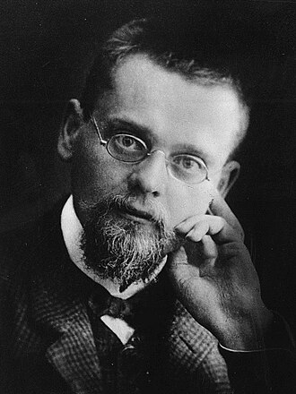

1871–1953
German
Set theory, game theory, mathematical logic
Ernst Friedrich Ferdinand Zermelo was born in Berlin and studied mathematics, physics, and philosophy at Berlin, Halle, and Freiburg. His 1904 proof of the well-ordering theorem — that every set can be equipped with a total order in which every non-empty subset has a least element — provoked fierce controversy because it relied on the axiom of choice, which many mathematicians found suspicious.
In response to the criticism, Zermelo axiomatised set theory in 1908, producing the first rigorous foundation for the subject. His axiom system, later refined by Abraham Fraenkel and Thoralf Skolem into what we now call ZFC, became the standard framework for virtually all of modern mathematics. It was a remarkable achievement: turning an intuitive notion (collections of objects) into a precise formal theory.
His 1913 paper on chess — proving that finite games of perfect information are determined — is now regarded as the first theorem in game theory, predating von Neumann's minimax theorem by fifteen years. Zermelo held a professorship in Zurich from 1910 to 1916, then moved to Freiburg. He resigned his position in 1935 after refusing to give the Nazi salute at the start of lectures, and lived in relative obscurity until his reinstatement in 1946. He died in Freiburg in 1953.
| Phase | Page | Referenced for |
|---|---|---|
| Phase 15 | Combinatorial Games | Asked whether chess is determined (1913) |
| Phase 15 | Combinatorial Games | Zermelo's theorem: determined outcome in finite perfect-information games |
| Phase 15 | Combinatorial Games | Historical context: first theorem in game theory |